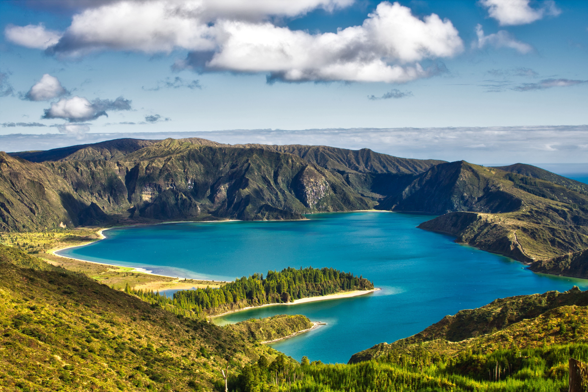
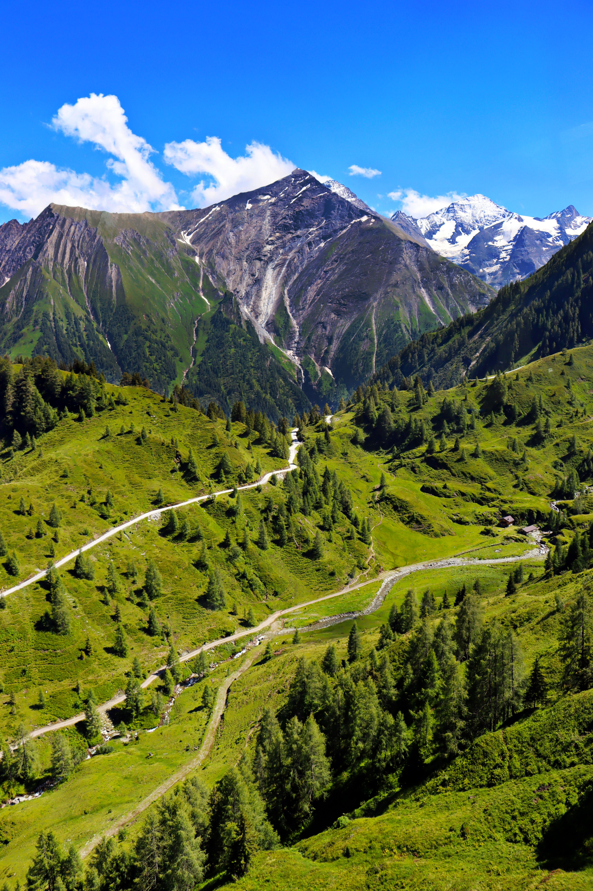

The Vertical Alpine World
Mountain highlands comprise dramatic terrain towering over surrounding landscapes. As elevation increases, environmental conditions change drastically over short distances—temperatures drop, atmospheric pressure decreases, and weather patterns become fierce and unpredictable.
Because of these rapid shifts, mountains create stratified ecological zones, housing everything from lush temperate forests at their base to hardy cushion plants and sure-footed wildlife near the snow line.
Water Towers of the World
For students examining environmental geography, mountain ranges are known as the "water towers of the world." Their snowpacks and glaciers capture precipitation and slowly release freshwater downstream, sustaining billions of people and countless lowland ecosystems across continents.
Species like snow leopards, mountain goats, and alpine flora have developed extraordinary adaptations to cope with low oxygen levels and freezing, rocky terrain.

Key Environmental Metrics
Essential scientific data points defining the mountain highland biome.
~24%
Of Earth's total land mass
>50%
Of humanity relies on mountain water
-6.5°C
Per 1,000 meters of elevation gain